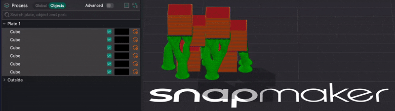
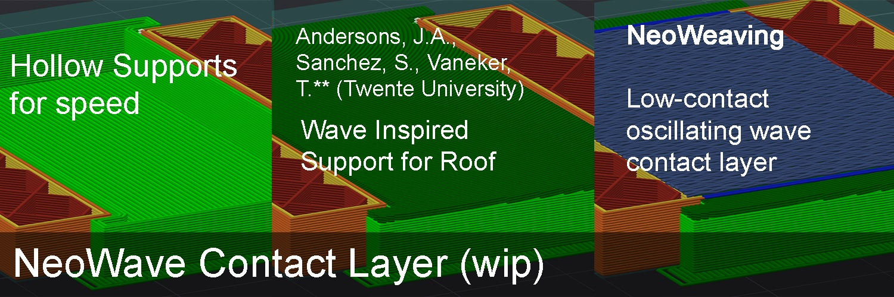

§12 · §16 · §24 — Placing
Supports
Three unrelated things live here. The big one is Support Zones: you say what to hold up and where the foot goes, and the column is built between the two. There are two ways to do that, an aimed pillar and a block tree, and the second one is what 2.4.5 adds. The second feature is support that knows about the other objects on the plate, which is a first for this family of slicers. The third is an experiment, a support roof built out of wave fronts instead of straight lines, sitting on a hollow pillar.
Support Zones
- Libre Mode
- aimed pillar: engine print-verified
- block trees: print-verified
- 2.4.4 · 2.4.5
Where Left-side gizmo toolbar›Support Zones ·needs Libre Mode
A support enforcer block has always been a box that says what to support. Everything about it below the object was thrown away, so the column fell straight down from the overhang wherever you put the box. A support zone says what to hold up and where the column may come down.
Worth saying first, because it sets the expectation for everything below. This is not a click and forget generator. You choose the surface, you choose where the foot goes, and on a long or awkward area you choose whether one foot is enough. The tool measures, draws and warns; it does not decide for you, and it never plants anything you did not ask for. Automatic supports already exist and they are one checkbox away. What was missing was a way to place one deliberately and see what you were going to get before slicing. Leave the tool alone and the slicer behaves as it always did.
There are two ways to build one, and the footprint you pick decides which, so there is no extra mode to learn.
| Footprint | What gets built |
|---|---|
| Whole patch, round, square | An aimed pillar. One solid from the surface you picked down to the landing, with a lean and a knee. |
| Paint | A block tree. A head over what you painted, a stump on the plate, and nothing drawn in between. The slicer grows that stretch. |
Stock enforcer block
You draw a box. It marks a region as needing support. The generator then routes the column its own way, straight down, and the only way to find out what you got is to slice and look.
With a support zone
You point at the surface, then at the landing. The pillar is built between the two, its roof is the real patch with its curve on it, and the panel draws the section at true scale before you commit to anything.
One click, and a foot placed for you
Point at the surface you want held up. Only surfaces facing downward can be picked, so the top of the part is never taken by mistake, and when several stacked surfaces sit under the cursor the wheel cycles through them.
The landing is then placed for you, plumb under the middle of what you took. Before 2.4.5 the second click was compulsory and the foot followed the cursor until you made it, which is how a pillar ended up 40 mm to one side of the thing it was holding without anyone asking for that. Moving the foot is still there, on the Move it again button, and it is now a decision instead of a step.
That filter is deliberately not the support threshold angle. A long shallow overhang that sags without quite passing the threshold is exactly the case a hand-placed zone exists for, so it stays pickable.
The pillar follows the surface rather than a bounding box. Its roof is the patch you took, curve included, so it sits flush against a rounded underside instead of leaving a gap under it.
The lean has a ceiling, and the slicer sets it
A support column can only step so far sideways from one layer to the next. That gives a steepest angle it can actually follow, and asking for more produces a staircase in mid air. So the angle is the input and everything else follows from it: the pillar leans at the angle you set, reaches a knee, and drops straight down from there.
Because the angle is the input rather than the outcome, a link the slicer cannot follow is not something you get warned about afterwards. It is something you cannot draw.
A block tree has no knee, because that stretch is not drawn at all. The same angle still governs it: there it is the budget the column spends per layer on moving toward its stump and closing onto it.
corridor_max_angle_deg and the reach is
reach_radius_mm, both from SupportZoneProbe.hpp; the drawing is the
panel's own elevation from GLGizmoSupportZones.cpp. The patch here is a plain
10 mm shelf so the geometry stays readable.
| Term | What it is |
|---|---|
| Lean | The angle you choose, measured off vertical. The whole sideways move happens on this stretch. |
| Ceiling | atan(0.75 × support line width ÷ layer height). The slicer clamps a column to three quarters of a line width per layer, so a thicker layer means a shallower ceiling. Under adaptive layer height the thickest layer is the one that counts. |
| Reach | How far sideways the foot can sit, which is the height under the patch times the tangent of the lean. Land outside it and the knee comes out below the plate. |
| Knee | Where the lean stops and the drop begins. No sideways offset means no knee, and the pillar is a straight column. |
| The wedge | Everything the corridor can follow, drawn behind the pillar. A landing outside it is one the slicer will not reach, and you see that as a shape. |
The footprint, and why cover exists
The footprint is one of four: the whole patch, a round or a square shape around the point you picked, or painted by hand. It starts in square, because whole patch is the one mode that cannot be expanded. The first three build an aimed pillar; painting builds a block tree, which is its own section below.
A shape can work two ways, and the difference decides how big a zone can get. Cut trims the shape to the surface you picked, so it can never be bigger than the patch, and the roof is the surface itself. Cover makes the shape be the section of the pillar. It can grow past the patch, up to 200 mm. The roof still follows the real surface wherever there is one, so a big circle over a curved underside still sits flush; where there is nothing above it, the roof stays flat.
Growing the outline of a patch always runs out eventually, because the shape folds through itself. Replacing the outline with a shape has no such ceiling, and that is the whole reason cover is there.
Head, foot, and painting
The edge is two sliders, head and foot, adjustable at the roof and at the foot separately and in both directions, interpolated by height in between. Set them differently and the pillar tapers: wide where it holds, narrow where it stands. Less material, and less to break off. Grow it instead and it catches the edges of an eave. Pushing inward and growing outward have different limits, and both come from the shape itself. A convex footprint has no outward limit at all, while pushing inward always runs out somewhere.
Painting is the fourth footprint. Pick the brush and drag on the surface to mark the area you want held up; the brush is the size of the slider, shift and drag rubs it out, and marks left in one stroke are joined into a continuous band rather than a row of dots. While the brush is chosen the surface you can paint on is lit faintly: everything connected to where you are that faces downward. That canvas is deliberately much larger than the patch a single click would take, because on a curve one click gives you a tiny coplanar patch and painting is the tool for going past it. Painting never crosses onto a surface facing up or sideways.
A stroke that starts on the part paints instead of moving it. The tool also does not jump to step 2 by itself the way a click does, so you can keep painting as long as you like.
Two maps, and they answer opposite questions
Green marks surface facing downward that a zone has already caught. This is the one that kills a quiet, common failure: a block that swallows solid material looks completely full on screen and produces nothing at all. Now it lights up nowhere and says so.
Red marks surface that leans past your threshold and sits inside no zone at all. Simplify3D fills everything with support and lets you carve it back. This does the opposite: it shows you the gap and leaves the decision to you. Both maps are drawn through the part, so a gap hiding behind the model is still a gap you can see, and how ghosted the part gets while the tool is open is up to you.
probe_object_coverage in
SupportZoneProbe.cpp, and its grid step is the
support base pattern spacing you already have, so what you see and what gets printed
share one number.
Red says might need support. It chooses a destination for a zone you are placing; it never decides that support is needed. What needs support stays the slicer's own overhang test, layer against layer. Red on the skirt where the model meets the plate is expected for the same reason: that surface really does lean past the threshold and really is inside no zone, and it also does not need support, because each layer there grows outward only a little from the one below. The map tells you the truth and leaves that call to you.
The detail of both maps is adjustable and it is a viewing preference, not a print setting.
Block trees: paint the area, plant the stump, the middle grows
Aimed pillars work on simple parts and stop working on real ones. The reason is measured and it is always the same. The footprint came from flattening the surface into plan view, and on the inside of a curve that goes vertical and then turns back, one spot on the plate has several heights. The outline crosses the equator of the shape and falls down the other side.
| Growing a circle inside a torus | Points on the outline | Footprint | Slope of the roof |
|---|---|---|---|
| expand 9.0 mm | 94 | 23.4 × 35.8 mm | 2.51 mm |
| expand 18.8 mm | 207 | 26.1 × 47.9 mm | 5.81 mm |
| expand 37.6 mm | 292 | 26.1 × 57.7 mm | 8.73 mm |
That is not a circle growing. It is a mask crossing to the far side of a hole. On the roof of one of those pillars, 42 of its 512 points sat more than a millimetre away from the point next to them, the worst of them 7.56 mm across a gap of 0.49 mm. Smoothing those spikes would hide the symptom, so the shape changed instead.
The aimed pillar
One solid, drawn from the roof to the foot. The roof follows the surface by sampling a height map, which is the step that goes wrong where the surface folds back on itself.
The block tree
Two solids and a gap. A straight prism over what you painted, a stump on the plate, and nothing in between. The slicer walks the column down through the gap.
The head is a straight prism. Flat roof, the outline of what you painted, no curve on it. That is what takes the ambiguous projection out of the picture: the slope of the roof is now zero, measured rather than described as small.
The stump is a magnet, not an origin. The column is born from the whole painted area, so it covers everything you marked by definition. Coming down it does two things at once out of one budget: it moves toward the nearest stump, and once it is over the stump it contracts onto it. The budget is the lean you set, so the taper comes out at the angle you asked for and no steeper. Travelling gets paid first, and whatever is left over goes on closing, which is why a column far from its foot barely narrows until it has arrived.
None of the walking is new. The corridor has been stepping a column sideways layer by layer
since 2.4.4, with the same per layer budget of dz × tan(angle) recomputed from
the real layer height, and it has been pairing islands between layers for just as long. One
line decided the direction, and it read it from the shape of the block. Now it reads it from
the stump. Everything else was already written and printed.
One stump is usually enough, and the first one is planted for you. The tray tells you when it is not: a piece of the column that reaches the bottom without meeting any stump is counted and named, with its layer and how far short it fell, and the answer to that is to plant another. Two stumps split the area between them, each taking the part that is closer to it, so a long or forked area comes down as two legs instead of one leaning slab. A ring around a hole is the clearest case, because a single stump in the middle sits under the hole rather than under the ring and can never be reached.
It does not branch. One stump grows one trunk, so an area that cannot converge onto the feet you gave it stops narrowing and says so rather than inventing a shape. And the head being a straight prism means it takes slightly more room at the contact than the surface needs. It is trimmed against the part like everything else, so it does not print more; what it loses is finesse on screen. Putting the curve back on the roof is a later job, once the shape is proven on real prints.
A soluble roof, and an ordinary body
Each zone can take its own filament for the roof, chosen from a strip of colour chips rather than a menu. The roof is the part that touches your model, so a soluble roof buys you a clean underside while the body of the support stays whatever is cheap.
The body deliberately stays on "same as the object", and that is not a shortcut. A support body set to follow the object is where the slicer dumps its purge. Pinning a tool to it gives that up and grows the wipe tower instead, in exchange for controlling the part of the support that cares least about material.
Zones that touch and share their settings print as one column. Two pillars meeting under the same overhang used to split the shared band, and the loser came out thinner all the way to the plate. Zones with different settings, or different roof filaments, still get out of each other's way, which is what that rule was for in the first place.
It sets the object up for you
Creating the first pillar on an object writes the support settings these pillars were tested and printed with onto that object: normal supports, a 0.2 mm top gap, one support wall, three interface layers, solid rectilinear interface. Two rules keep that honest. It only writes a setting you have not already chosen yourself, and everything it writes is a per object setting you can see, undo, or remove from the object list.
The top gap was 0.1 mm until 2.4.5, and on the vase print the roof welded itself to the part here and there. The zone is not what decides that: it is how well the overhang of that layer comes out, and a layer sitting a little high closes the gap on its own. 0.2 is also the value the default profile uses. With adaptive layer height there is one more reason to keep the margin, which is that the support roof is not sliced at the height the part is using there, so the gap you ask for and the gap you get drift apart.
| It changes | Why |
|---|---|
| Tree supports become normal, keeping auto or manual | The tree generator does not know about the corridor, so the lean and the knee you draw would not come out. |
| Support style becomes Snug, on opening the tool | With any other style the support grid re-aligns itself to every layer, so a column that should slide comes out in steps. |
| Top gap 0.1 mm, one wall, three interface layers, solid rectilinear interface | The values the printed parts were made with. Only the ones you have not set yourself. |
Zones you can reopen, once
A pillar built with this tool remembers the gesture that made it. Pick the pencil on its card and the whole thing comes back into the panel: the patch, the brush strokes, the landing, any extra stumps, the footprint, the edges and the angle. Change what you want and press Apply changes. Nothing is written until you apply, and one edit is one undo.
That memory only holds while the zone is locked, which is what the padlock on the card means. Move, rotate or scale it with the ordinary gizmos and the link between the gesture and the geometry is broken, so the lock goes and the zone becomes an ordinary support block. It still prints exactly as it is, it just cannot be reopened. Duplicating a zone gives you an ordinary block too, because the copy sits somewhere else and the gesture that made the original does not describe it any more. Either way it is a one way door, and another zone is two clicks.
Why this instead of tree supports
A drawn pillar is one column that goes where you put it, and a block tree is one trunk that goes where you put its foot. Either way the toolhead prints it in one place and moves on. Tree supports branch, and every branch is another island on the layer, which is another travel and another retraction. Fewer retractions is not only faster, it is much kinder to the materials that hate being pulled back, and those are exactly the flexible and moisture sensitive filaments where stringing and grinding show up first. You also decide where the foot lands, so it can stay off a delicate surface instead of finding one on its way down.
PerObject Support
- no gate
- print-verified
- 2.3.9
Where Support›Enable support›PerObject Support ·per object
Stock slicers generate each object's support as if it were alone on the plate. Two separate, non-Assembled objects close enough that their supports share space produce a collision: each support grows through the other object, and through the other's support. The only stock workaround is to merge everything into one Assembled object, which changes how the parts slice and defeats the point when they are meant to be separate.
Stock
Support is a per-object silo. Neighbours do not exist. Two supports that want the same space both take it.
With PerObject Support
Every other object on the plate, its body and its already-generated support, becomes collision geometry to route around, keeping the normal support-to-object XY distance from it.

| Support kind | Cross-object avoidance |
|---|---|
| Tree — Default / Slim / Strong / Hybrid | ✅ hybrid tree engine |
| Tree — Organic | ✅ separate organic engine |
| Normal / Grid | ✅ classic engine |
| NeoWave (below) | ✅ built on the classic engine |
- Support versus support, not just bodies. When two objects' supports would tangle, the one generated second routes around the first's finished support, not only around its body.
- Move-aware. Nudging one object regenerates every nearby object's support against the new position. Stock Orca never invalidated an object's own support on a move, because support was a per-object silo; this adds that dependency.
The wide first-layer base or brim that support engines grow for bed adhesion is a free outward offset that stock code never clips against anything. Exaggerate it and it collides even with itself. Under PerObject Support that first-layer expansion is dropped, to keep bases from spilling across objects. Supports grab the bed a little less at the very first layer, in exchange for never colliding. It only applies while the toggle is on.
It only takes effect when the plate prints all objects at once, by layer. In sequential by-object printing the neighbours are not on the bed yet, so avoidance is inert. Stored per object in the 3MF. It is built on the same cross-instance contact detector as Gravity, and True Objects forces it on for every object while it is active.
NeoWave WIP
- Libre Mode
- roof + pillar print-validated
- contact layer slice-verified, print-pending
Where Support›Support type›NeoWave
NeoWave replaces the interface roof fill with a wave front pattern: long, continuous paths that diffract around concavities, ported from a published wave-overhang algorithm, instead of straight parallel lines. It optionally hollows out the support body underneath that roof, perimeter only with no infill, trading material and print time for a support that still closes cleanly on top.

Turning it on
Enable Libre Mode, then pick NeoWave as the support type. Selecting it locks the support to its tested shape automatically: Base pattern → Hollow and Interface pattern → Wave are set for you and greyed out, since the other base and interface patterns do not apply to NeoWave and only added clutter. Switch back to a normal support type and the full choices return.
| Control | Options / default | What it does |
|---|---|---|
| Wave roof shape | Concentric / Wave | Concentric collapses nested rings inward from the roof boundary. Wave sweeps open arcs across the region, diffracting around concavities. Print-tested: Wave is the one that works. Concentric fails to close cleanly over a hollow pillar. |
| Wave roof order | Smart / ZigZag / Monotonic | Print order of the same fronts. The drawn shape does not change, only how it is traversed. Smart hooks each front onto whatever is already printed for the fewest long travels; ZigZag chains them into one continuous path; Monotonic keeps every front separate. |
| Reverse wave roof order | off | Flips which edge, or for Concentric which ring, the fill starts from. |
| Hollow pillar walls | 0–10, default 0 | Perimeter walls for the support body, printed with no infill: a hollow pillar. 0 keeps the normal solid body. The first layer always stays solid for bed adhesion. |
A hollow pillar (Hollow pillar walls ≥ 1) capped with a Wave roof of two interface layers printed cleanly. The same pillar capped with a Concentric roof did not close properly over the hollow. Wave is already the default shape.
The contact layer print-pending
A separate, independent toggle that ripples the Z of the object's own bridge fill wherever it lands directly above a support roof. Valleys touch the roof, crests stay in the air, leaving intentional microscopic contact gaps meant to reduce the bonding force so the support separates more easily.
Unlike the original idea, which was a paintable Sandwich effect, this shipped as a plain on/off toggle under Support, independent of the Sandwich system entirely. It works whether or not the object has any painting on it, and it never touches colour or pattern, only Z.
| Control | Default | What it does |
|---|---|---|
| Support neoweave contact | off | Enables the wave ripple on bridge fill directly above a support roof. |
| Contact wave amplitude | 0.1 mm | How far the wave deflects. Upward only: by construction it never digs into the roof below. |
| Contact wave period | 0.6 mm | Distance between successive peaks along the fill line. |
The toggle is confirmed to fire correctly wherever bridge fill sits over a support roof, and the resulting G-code looks right. This specific mechanism has not been through a real print. Orca's G-code preview also does not render the Z variation it produces, the same known limitation as Neoweave and ZBump, so the G-code is correct even though the preview looks flat.
Known gaps in this build: there is no dedicated key for the roof layer count, so it uses the existing Interface top layers setting, and there is no panel or gizmo yet. All the controls live as plain fields under Support.
The catch
- A support zone only makes support where it finds surface that needs it. That is what stops it fabricating support nobody asked for, and it does limit what shapes are possible.
- Whole patch follows the flat surface it starts on, so on a large flat ceiling that means the whole ceiling. It is also the one footprint that cannot be expanded, because there is no shape to put in the outline's place, which is why the tool does not start there.
- The edge slider runs out on the way in. Push it inward far enough and the shape would fold through itself, so the limit shrinks as you go. Growing outward usually has no such limit; if you need much more than the patch allows, that is what cover is for.
- A patch that folds over itself in plan view is flagged, not fixed. A band that wraps past the vertical projects onto itself from above, so the foot would overlap itself. The panel says so and leaves the fix to you: crop it smaller, or pick a flatter part of the surface.
- The landing stays put while you edit a zone. Editing is for the dials. Moving the foot means a new zone, which is two clicks.
- Use Snug as the support style. The tool sets it on the object when you open it. With Grid or Default the column is snapped to the support grid, so it cannot come out thinner than one whole cell, about 2.8 mm at the default spacing and 5.3 mm at 5 mm, and it steps sideways a cell at a time instead of sliding. It prints, and for some shapes that chunkiness is useful, but it lays support walls where nothing needed holding and that is stringing. Slicing a painted zone with either style raises a notice.
- Automatic support stays on unless you turn it off. A zone adds to what the slicer already decided to hold up, so support you did not draw is the automatic overhang detection doing its job. The only my zones switch at the top of the zone list turns it off for that object, and the panel offers the same switch as a one click fix while the condition holds. It stays a switch on purpose: someone who wants both should keep both.
- Painting costs CPU. Every mark is real geometry being clipped against the surface, and a long stroke is a lot of it.
- Cover mode is build verified, not yet printed. The brush and the block trees have been: a vase printed with two extruders, Precision Adapter Layer Height and height ramps from 0.32 mm down to 0.08 mm, held up by two painted stumps. So has the engine underneath them, on a part held up by leaning pillars and a torus with a 0.2 mm gap.
- PerObject Support gives up first-layer grip. The wide base is dropped so bases cannot spill across objects. On a tall thin support that is a real trade.
- By-layer printing only. Sequential by-object printing makes avoidance inert, because the neighbours are not there yet.
- Moving an object now costs a support regeneration for every nearby object, which is the price of the dependency being correct.
- NeoWave is Libre Mode only and still experimental. The roof and hollow pillar are print-validated; the contact layer is not.
- Concentric does not close over a hollow pillar. Known, tested, and the reason Wave is the default.